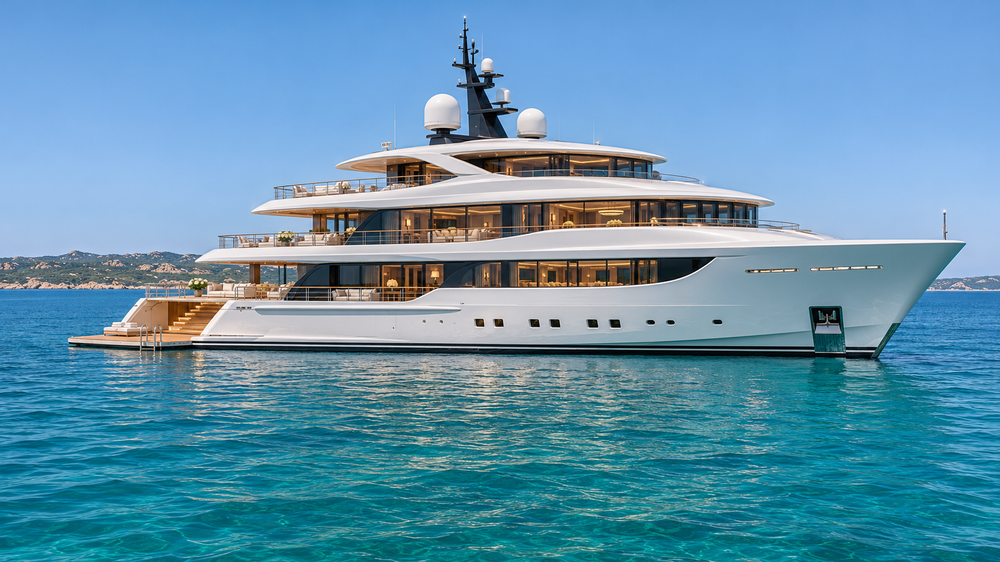

Bonjour !
Cliquez sur une baie vitrée pour entrer dans la pièce
LIGHTING
--:--
Crestron TSW-1070 · Frequence TV · simulation, aucun équipement réel n'est piloté
Votre yacht, en un geste. Explorez les espaces et les ambiances à bord.

Crestron TSW-1070 · Frequence TV · simulation, aucun équipement réel n'est piloté